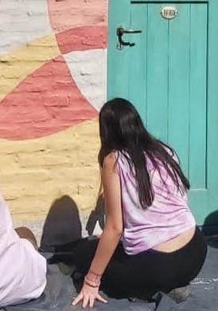

INFORMACION
Mi nombre es Francesca Mattioli, soy ilustradora, diseñadora y artista. Estudio diseño gráfico pero también pinto y dibujo desde que tengo memoria. Mis últimos proyectos se basan principalmente en ilustraciónes digitales, siempre manteniendo la estética de la pintura tradicional en acrílicos.
Mi estilo podría definirse como una mezcla entre realismo y collage. Me interesa que se distingan las pinceladas en las obras, a través de ellas aparezco en cada pintura.
Tengo una profunda admiración hacia todos los movimientos artísticos en general, en ellos busco mi inspiracion. Principalmente en fotografías, el cine, trabajos de otros ilustradores, tatuadores y diseñadores. Otra fuente de inspiración es la naturaleza, en particular los animales y el arte botánico.
Creo que no podría limitarme a una rama del arte, todas me interesan y de cada una tomo algun recurso o estética que me interesa para formar mi identidad. Continuamente estoy cambiando y mutando en mi forma de expresarme, eso es lo que más disfruto de ser artista.